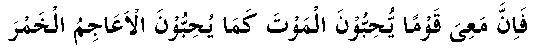

Hadhrat ‘Umar (RA) himself wanted to lead the army in the Iraq expedition. There were several days of discussions separately among the common people and among the leaders, whether Amir-ul-Mominin should lead the expedition or stay in Madinah to direct the operations and arrange reinforcements from the headquarters. The common people were in favour of the former, and the leaders in favour of the latter alternative. Somebody mentioned the name of Hadhrat Sa’ad bin Abi Waqqaas (RA) as a replacement for Hadhrat Umar (RA) to command the expedition. Both the groups agreed and it was decided that Hadhrat Sa’ad (RA) should lead the expedition and Hadhrat Umar (RA) would stay behind in Madinah.
Hadhrat Sa’ad (RA) was very brave and considered to be one of the heroes of Arabia. Iraq was a part of the Persian Empire and Yazdjard was the Emperor at that time. He sent for one of his best generals named Rustam and ordered him to stop the Muslim advance. Rustam tried to avoid going to the battlefront because of his fear of the Muslims. He requested the Emperor again and again to keep him back, saying: “I shall make arrangements to send off reinforcements and shall be of use to your Majesty at the time of counsel.” The Emperor did not agree and he had to go to the battlefield.
When Hadhrat Sa’ad (RA) was about to leave Madinah, Hadhrat Umar (RA) gave him the following instructions: “O, Sa’ad! Let this fact not deceive you that you are one of the trusted companions of Nabi (Sallallahu Alayhi Wasallam) and that people call you his uncle. Allah Ta’ala does not prevent evil with evil, but He prevents evil with good. Allah Ta’ala has no relationship with His creation. All men, high and low, are equal before Him, for all are His creation and He is their only Rabb. One can win His favours only through devotion to His service. Remember that the Sunnat of Nabi (Sallallahu Alayhi Wasallam) is the only correct way of doing things. You are going on a very heavy task. You can only fulfil this by following the truth. Encourage good habits in yourself and your companions. Choose the fear of Allah Ta’ala as your chief asset, for this will lead you to His obedience and prevent you from His disobedience. Obedience to Allah’s Ta’ala command is for those who hate this world and love the Hereafter.”
Sa’ad (RA) faced the heavy odds with full confidence in Allah Ta’ala. When both the armies were ready to fight, he sent a message to Rustam, which read:

“Rustam! There are people with me to whom death (in the path of Allah Ta’ala) is more attractive than is wine to the people in your army.”
Ask the people who are addicted to liquor, how much they love to taste it. The Sahaabah (RA) loved to meet death in the Path of Allah Ta’ala even more. This was the chief cause of their success.